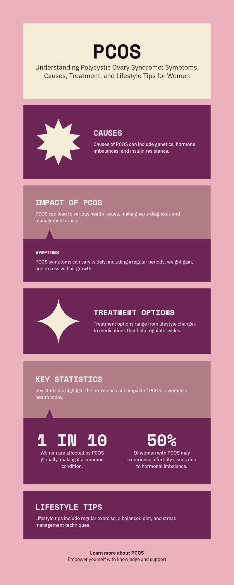

Managing PCOD with Care

PCOD (Polycystic Ovarian Disease) is a hormonal disorder affecting 1 in 10 women. Early care, healthy habits, and correct guidance can help women lead a normal and fertile life.
⚠️ Common Symptoms
- Irregular periods or no periods at all
- Weight gain and acne
- Facial hair growth (hirsutism)
- Hair thinning
- Difficulty getting pregnant
🩺 How PCOD Affects Fertility
PCOD affects ovulation — the monthly release of eggs from ovaries. Women may have delayed, irregular, or no ovulation, making conception difficult without tracking cycles or hormonal help.
📆 Calendar Method to Conceive Naturally
For women with relatively regular cycles:
- Track periods for 3 months.
- Ovulation likely happens around Day 12 to Day 16 in a 28-day cycle.
- Have intercourse from Day 10–18 on alternate days.
- Use ovulation kits or monitor cervical mucus (clear, stretchy = fertile).
🥗 Diet & Lifestyle for PCOD
- Low-sugar, high-fiber diet with fresh veggies and whole grains
- Reduce refined carbs and sugary foods
- Exercise 30–45 minutes, at least 5 days/week
- De-stress via yoga or meditation
- Sleep 7–8 hours regularly
🎥 Video Guide
📄 Downloadable PCOD Management Guide:
📥 Download PCOD Guide (PDF)Kirti: “I conceived naturally after following Dr. Muskan’s advice on cycle tracking. Thank you!”
Ayush's wife: “From hairfall to regular periods, my recovery feels like a miracle.”

"I’ve seen many women lose hope with PCOD. With the right steps, natural pregnancy is very much possible."
– Dr. Nitish